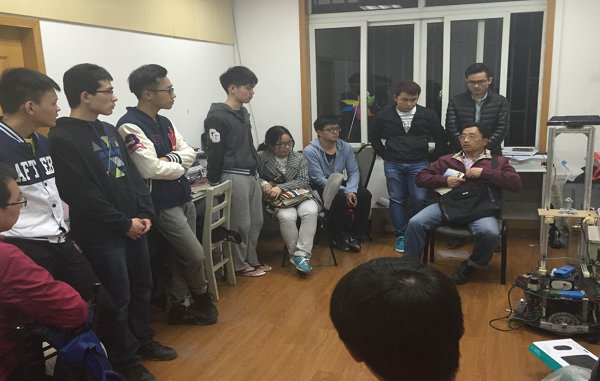

2016年3月30日晚8时，在延长校区机械附楼209-3室举行自强队关于上海教育展览会的展前会议。出席此次会议的有自强队指导老师黄慎之老师。
会议期间，黄慎之老师对此次上海大学自强队参与的上海教育展览会进行了进一步的动员，强调了此次教育展的重要性。同时传递了校领导对上海大学自强队的热切关心，希望自强队能不辱使命在此次教育展中展现出上海大学学生的创新能力。随后，黄慎之老师认真地询问自强队队员们在本次教育展览中所遇到的问题，大到机器人整体搬运，小到几根小小的杜邦线。
就像钱伟长校长说的一样：“培养有创新精神和创新潜质的人是高等教育的目标之一。”创新是教育的灵魂，学生应该积极通过实践提升创新能力。自强队也将全力投入到本次的上海教育展览会中。
通过此次会议，不仅解决了很多机器人的实际问题，同时也让队员们对此次教育展更加的重视。相信在自强队所有成员的努力下，上海大学一定能在此次上海教育展览会上有良好的表现。
上海大学机自学院自强队
2016.3.30